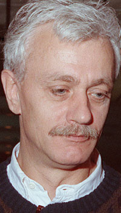

Het Jan van Paradijs Fonds is een stichting opgericht in 2002, ter
nagedachtenis van de sterrenkundige / astrofysicus Professor Dr.
Johannes Antonius van Paradijs (1946-1999), hoogleraar aan de
Universiteit van Amsterdam van 1988-1999.
Van Paradijs was een wetenschappelijk onderzoeker van wereldformaat op
het gebied van de Hoge-Energie Astrofysica: röntgen- en
gamma-astronomie (
levensbeschrijving Jan van Paradijs op Wikipedia).

Doelstellingen
De bevordering van de opleiding en vorming van jonge sterrenkundige
onderzoekers, in het bijzonder aan de Universiteit van Amsterdam, en
voorts al hetgeen hiermee rechtstreeks of zijdelings verband houdt of
daartoe bevorderlijk kan zijn.
De stichting tracht haar doel onder meer te verwezenlijken door:
Het instellen en mede financieren van één of meer bijzondere
leerstoelen in de sterrenkunde/astrofysica aan de Universiteit van
Amsterdam.
Het instellen en mede financieren van een gastleerstoel aan de
Universiteit van Amsterdam, genaamd de
Jan van Paradijs leerstoel.
Het ter beschikking stellen van subsidies voor studenten en promovendi
in de sterrenkunde.
Middelen
De middelen van de stichting worden verkregen uit
Giften, legaten en erfstellingen
Bijdragen door privépersonen en bedrijven
Overige bronnen van inkomsten
Thans bestaande bijzondere leerstoelen van het fonds
High-Energy Astrophysics, specifiek: Space Instrumentation
(sinds 1 februari 2020. Thans te
vervullen; vacant sinds 1 februari 2025,
emeritaat van Prof. Dr.
J.W. den Herder, SRON Leiden)
Observational High-Energy Astrophysics, specifiek: Black-Hole
Feedback. Prof. Dr. M. Wise, directeur of NWO
Institute SRON, Leiden; sinds
1 april 2021
Vormen van subsidies voor studenten en promovendi verstrekt door het
fonds
Subsidies voor masterstudenten van de Universiteit van Amsterdam als
bijdrage in de kosten van deelname aan de Nederlandse Astronomen
Conferentie (NAC)
Subsidies voor promovendi in de sterrenkunde in Nederland voor een
bijdrage in de kosten van deelname aan internationale conferenties en
zomerscholen
Subsidies als bijdrage in de kosten voor buitenlandse sterrenkundige
promovendi voor een werkbezoek aan Nederland
Gezien de beperkte middelen van het Fonds zijn de subsidies voor
promovendi beperkt tot maximaal 200,– Euro per aanvraag.
Procedure voor aanvraag van subsidies
Zij die een subsidie willen aanvragen, moeten hiertoe het betreffende
aanvraagformulier indienen via onderstaande links
Stuur het ingevulde en ondertekende formulier naar:
Executive Secretary Jan van Paradijs Fonds
Anton Pannekoek Instituut voor Sterrenkunde
Universiteit van Amsterdam
Postbus 94249
1090 GE Amsterdam
E-mail: secr-astro-science@uva.nl
Het formulier moet mede ondertekend zijn door de
supervisor/onderzoeksleider van de student of promovendus. Na ontvangst
van de aldus ingevulde aanvraag, beslist het stichtingsbestuur over de
toekenning van de subsidie. Het beoordelen van de aanvraag neemt
ongeveer een maand in beslag.
Criteria voor de toekenning van een subsidie
Subsidies voor promovendi worden toegekend voor deelname aan een
conferentie, workshop of zomerschool op het gebied waarin de promovendus
werkzaam is. De subsidie is maximaal 200,– Euro. Men kan niet meer
dan één subsidie ontvangen per kalenderjaar.
Een kort wetenschappelijk verslag en financieel overzicht (uitgaven en
ontvangen subsidies) moet worden ingediend binnen drie maanden na afloop
van de conferentie, workshop of zomerschool.
Een aanvraag voor subsidie voor een bijeenkomst die al heeft
plaatsgevonden is niet mogelijk.
Samenstelling van het Stichtingsbestuur
Het bestuur doet zijn werk zonder vergoeding en is als volgt
samengesteld:
Prof. Dr. E.P.J. van den Heuvel (voorzitter, emeritus UvA)
Prof. Dr. L. Kaper (secretaris, UvA)
Prof. Dr. R.A.M.J. Wijers (penningmeester, UvA)
Prof. Dr. M. van der Klis (emeritus UvA)
Dr. S.J. Noorda (emeritus UvA)
Dr. N. Degenaar (UvA)
Prof. Dr. T.J. Galama (University of Southern California en VU)
Overzicht van activiteiten en financiën
Een kort overzicht van de activiteiten en een financieel overzicht van
de middelen van het fonds is beschikbaar via deze link.